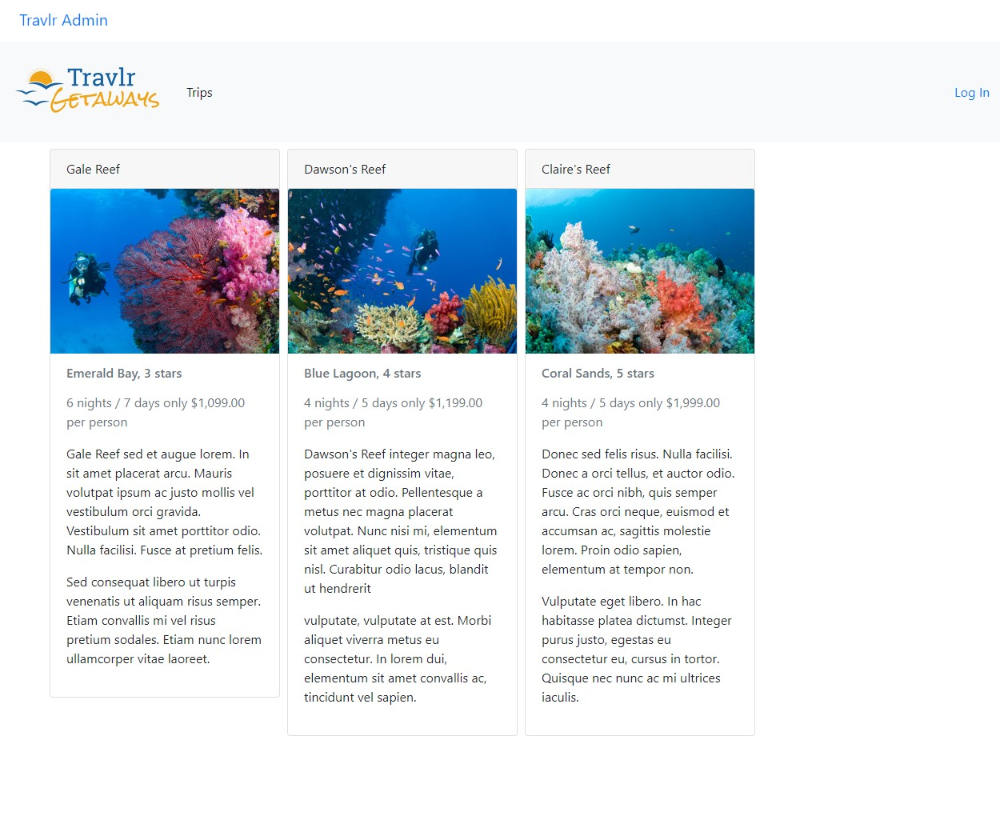
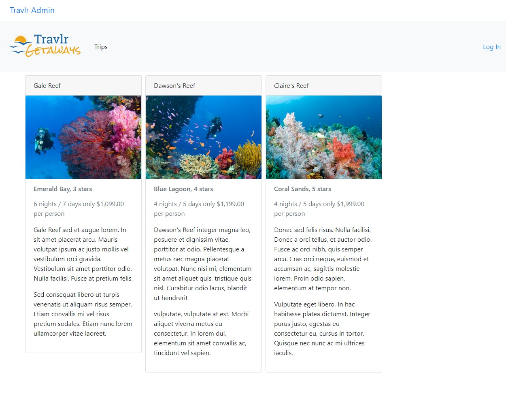

About Me
I originally went to college at Keene State College as a double major in Music Education and Music Composition. I was a high school music teacher for a few years before realizing that teaching wasn't for me. During COVID, I wanted to learn how to code for fun and asked some friends to teach me how to code. This combination of finding a new skill and losing interest in my career led me to the decision to change careers. I have always loved different aspects of science. I love learning how things work so becoming a software developer made sense.
I began taking classes at Southern New Hampshire University at the beginning of 2022. I started learning Python and Java in my first few classes. I eventually learned C++ as well. I've also learned about the software development lifecycle, system architecture, and most recently a little about embedded systems and basic AI programming.
Programming Examples
Travlr Website
One of my final projects for a college course was to create a full stack application using a MEAN stack. This included using Express and Node to create a customer facing frontend website, MongoDB for the backend database, and Angular to create a single-page application for the client's adminstratie purposes.
 
